Summarize how goals, constraints, incentives, and market rivalry affect economic decisions.
Distinguish economic versus accounting profits and costs.
Explain the role of profits in a market economy.
Apply the five forces framework to analyze the sustainability of an industry’s profits.
Apply present value analysis to make decisions and value assets.
Apply marginal analysis to determine the optimal level of a managerial control variable.
Identify and apply six principles of effective managerial decision making.
The Manager
A person who directs resources to achieve a stated goal.
Directs the efforts of others.
Purchases inputs used in production of firm outputs.
Directs product price or quality decisions.
Economics
The science of making decisions in the presence of scarce resources.
Resources: anything used to produce a good or service, or achieve a goal.
Decisions: important - scarcity implies trade-off.
Managerial Economics Defined
The study of how to direct scarce resources in the way that most efficiently achieves a managerial goal.
Where should a firm purchase components? Should the firm specialize in one type or multiple? How much to produce, and at what price to sell?
Economics of Effective Management
The basic principles of effective management:
Identify goals & restraits
Recognize nature & imporance of profits
Understand incentives
Understand markets
Recognize the time value of money
Use marginal analysis
1. Identify Goals + Restraints
Well-defined goals
Firm's overall goal = max profits
Constraits make it difficult to achieve goals; i.e. available tech, prices of inputs used in production
2. Recognize the Nature + Importance of Profits
Accounting Profit:
Total amount of money taken in from sales (TR) minus the dollar cost of producing goods/services.
Economic Profit:
Difference between TR and cost (TC); i.e. opportunity cost.
Opportunity Cost:
Explicit cost of a resource plus the implicit cost of giving up its best alternative.
The role of profits
Profits are a signal to resource holders; where resources are most highly valued by society.
Five Forces and Industry Profitability
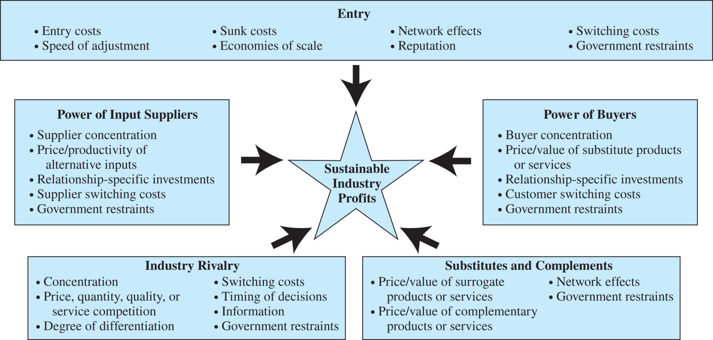
3. Understand Incentives
Changes in profits proivide an incentive to how resource holders use their resources.
Within a firm, incentives impact how resources are used and how hard workers work; i.e. construct incentives to induce maximal effort from employees.
4. Understand Markets
Two sides in market transaction: buyer & seller.
Bargaining position of consumers & producers is limited by three rivalries in economic transactions:
Consumer-Product Rivalry
Consumer-Consumer Rivalry
Producer-Producer Rivalry
Government & the market.
5. Recognize the Time Value of Money
Gap often exists between the time when costs are borne and benefits recieved. Managers can use present value analysis to properly account for the timing of receipts and expenditures.
Present Value Analysis
The amount that would have to be invested today at the prevailing interest rate to generate the given future value.
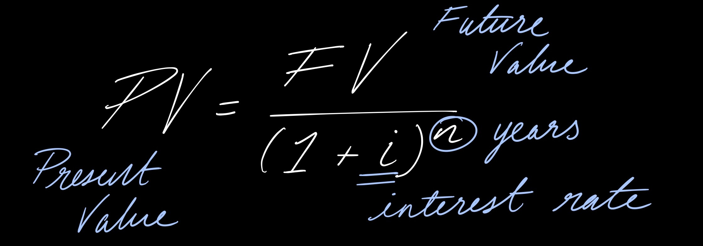
Present value of a single future value.
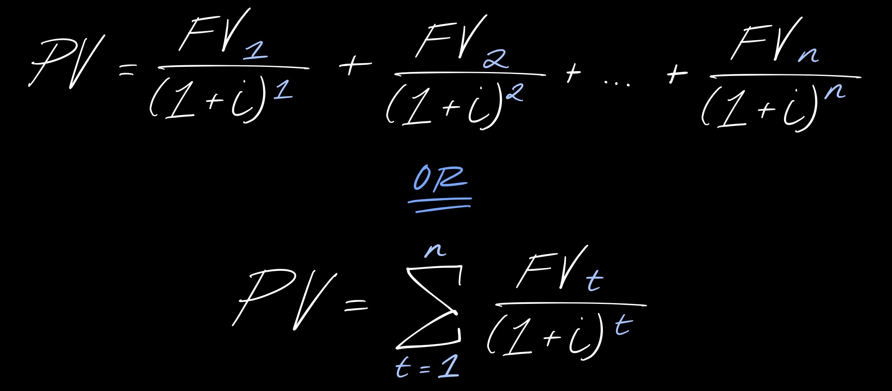
Present value of a stream of future values.
Examples:
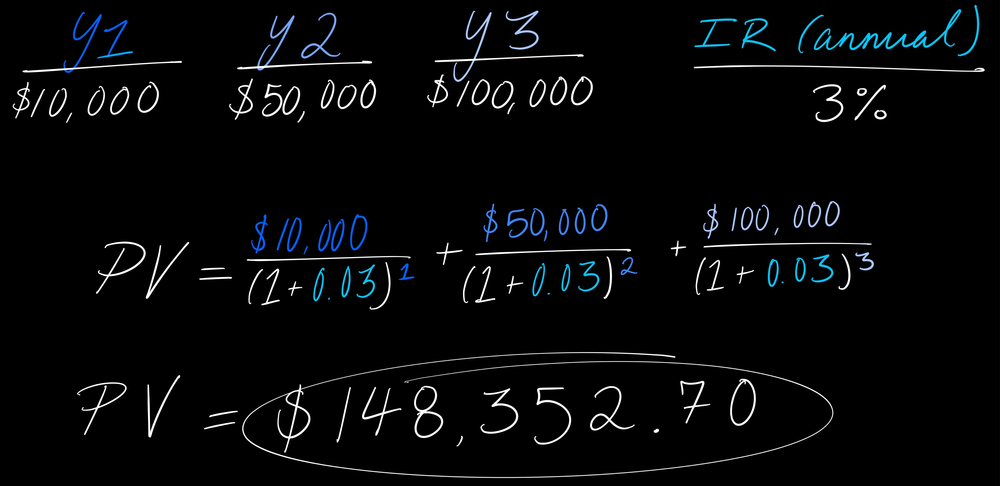
Net Present Value
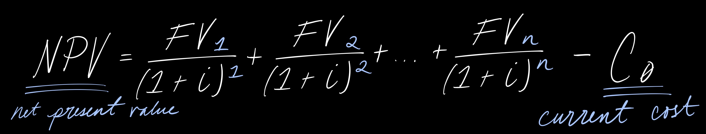
Present value of the income stream generated by a project minus the cost of the project.
Present Value of Indefinitely Lived Assets
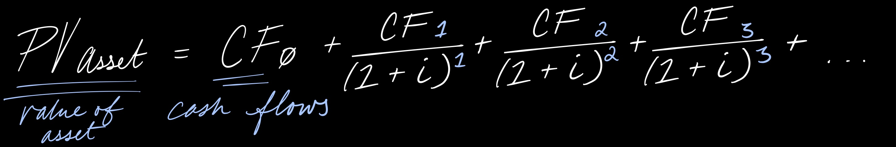
Present value of decisions that indefinitely generate cash flows.
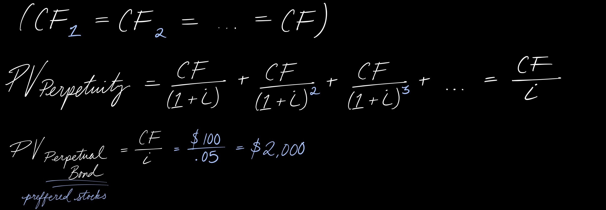
Present value of this perpetual income stream when the same cash flow is generated.
Present Value and Profit Maximization
Profit Maximization:
Maximizing profits means maximizing the value of the firm, which is the present value of current future profits.
Present Value and Estimating Values of Firms
The value of a firm with current profits π₀, with no dividends paid out and expected, constant profit growth rate of g (assuming g < i) is:
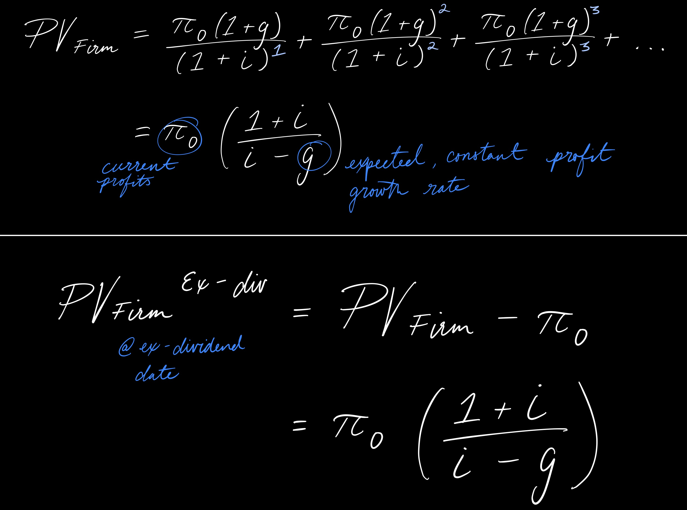
When divdends are immediately paid out of current profits, and the present value of the firm is (at ex-divident date).
Short-Term vs. Long Term Profits
If the growth rate in profits is < the interest rate and both are constant, maximizing current (short-term) profits is the same as maximizing long-term profits.
6. Use Marginal Analysis
Given a control variable, Q, of a managerial objective, denote the:
Total benefit as B (Q)
Total cost as C (Q)
Manager's objective is to maximize net benefits:
N(Q) = B(Q) - C(Q)
How can the manager mazimize net benefits? Use Marginal Analysis!! :D
Marginal Benefit: MB(Q)
The change in total benefits arising from a change in the managerial control variable, Q.
Marginal Cost: MC(Q)
The change in total costs arising from a change in the managerial control variable, Q.
Marginal Net Benefits: MNB(Q)
MNB(Q) = MB(Q) - MC(Q)
Marginal Principle:
To max net benefits, the manager should increase the managerial control variable up to the point where marginal benefits equal marginal costs.
This level of the managerial control variable corresponds to the level at which marginal net benefits are zero; nothing more can be gained by further changes in that variable.
Examples:
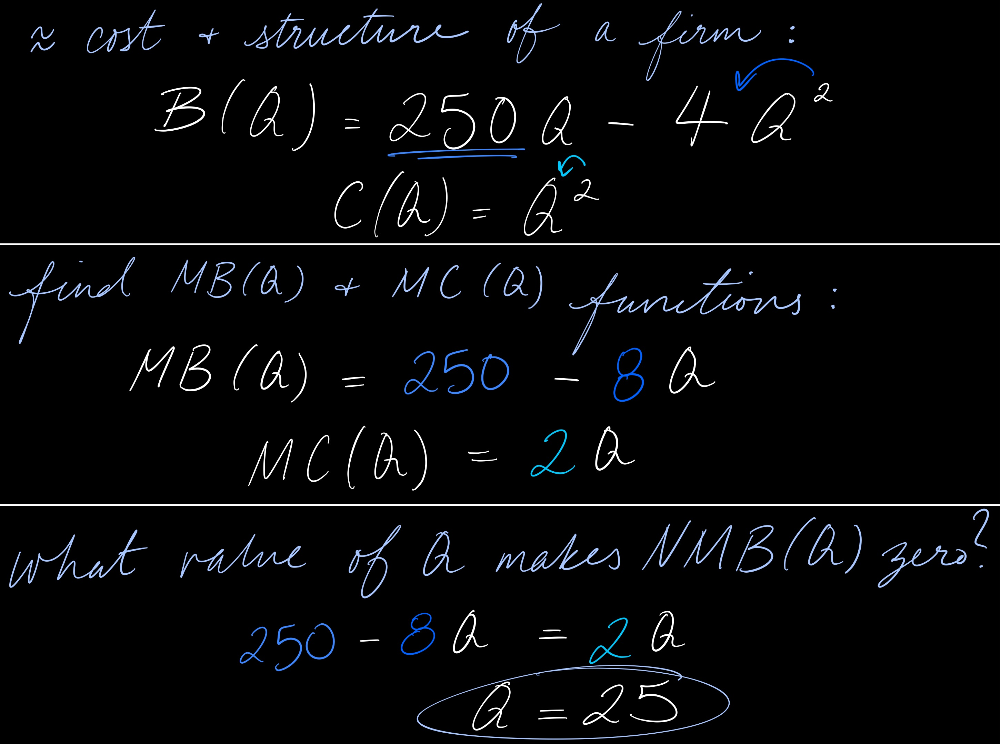
Determining the Optimal Level of a Control Variable
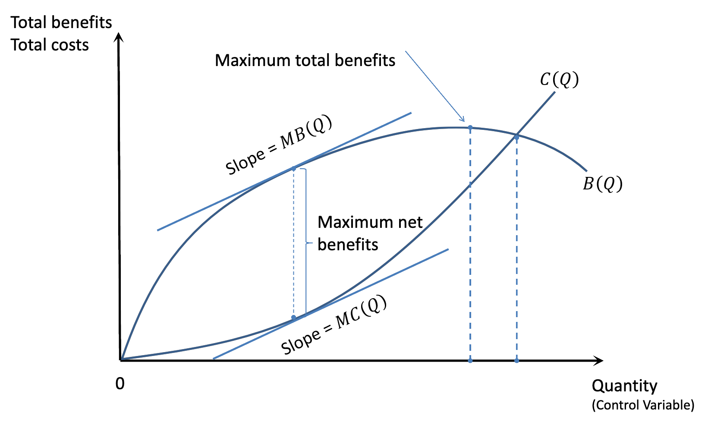
Represents the total benefits and the total costs of using different levels of Q under the assumption that Q is infinitely divisible.
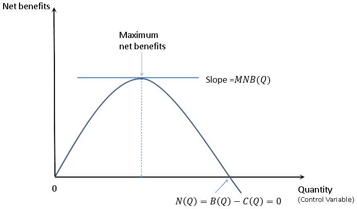
Presents the net benefits B(Q) - C(Q), and represents the vertical difference between B and C in the top panel.
Benefits are maximized at the point where the difference between B(Q) and C(Q) is the greatest in the top panel.
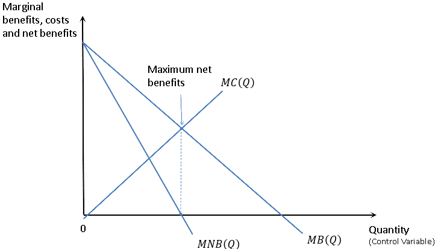
The slope of B(Q) is △B/△Q, or marginal benefit, and the slope of C(Q) is C/△Q, or marginal cost.
The slopes of the total benefits curve and the total cost curve are equal when net benefits are maximized.
This is another way of saying that when net benefits are maximized, MB = MC.
Marginal Value Curves Are the Slopes of Total Value Curves
When the control variable is infinitely divisible, the slope of a total curve at a given point is the marginal value at that point.
The slope of the total benefit curve at a given Q is the marginal benefit of that level of Q.
The slope of the total cost curve at a given Q is the marginal cost of that level of Q.
The slope of the net benefit curve at given Q is the marginal net benefit of that level of Q.
A calculus alternative:
slope of a continous function is the derivative/marginal value of that function:
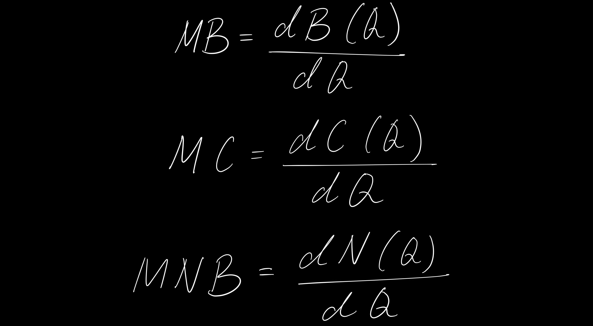
Incremental Decisions
Incremental Revenues:
The additonal revenues that stem from a yes-or-no decision.
Incremental Costs:
The additional costs that stem from a yes-or-no decision.
"Thumbs up" decision:MB > MC.
"Thumbs down" decision:MB < MC.
09.08.26
Economics = allocation of scarce resources. How do economists determine where said resources go?
For every resource there is an unlimited use, however people have NEEDS and WANTS (also known as UTILITIES) that help determine the basis of what they should be put towards.
Utilities are ulimited, resources are limited; need to quantify needs and wants. Markets decide where resources go (best use). Bartering can entail too specific of items to exchange, and both parties need to be better off for a transaction to occur.
MUTUAL COINCIDENCE OF NEEDS = happen to both have what the other needs/wants. CURRENCY abstracts this concept; makes it easier for giving to the highest willingness to pay, thus increasing overall utility.
If person does not want what other has/does not deem value, opportunity cost of giving up utility increases (nothing ever happens...).
MC (resource costs, opportunity costs) <–––> MU (percieved benefits). Searches for each other to increase utility.
MC < MU (or MB)
Price: MC ≤ P ≤ MU
(MU - MC) ≥ 0
(MU - P) + (P - MC) ≥ 0
* (MU - MC) is the value created, AKA competitive advantage.
* (MU - P) is consumer surplus. (P - MC) is producer surplus.
Neo-classical Argument:
In free markets, you will max value creation. Each individual is acting in their best interest. Individual has bargaining power & will only transact if better off. MAX VALUE & WELFARE (INVISIBLE HAND).
Opportunity Cost:
Explicit cost of a resource plus the implicit cost of giving up its best alternative.